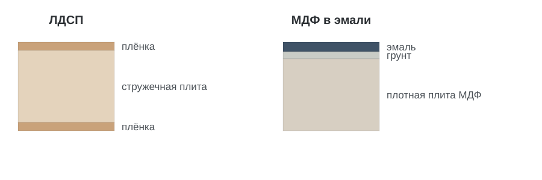

Главное за 30 секунд
- Корпус почти всегда делают из ЛДСП – это надёжно и разумно по цене.
- Фасады – то, что видно: здесь выбирают между ЛДСП, МДФ в плёнке, эмалью и пластиком.
- Главный враг мебели – вода. Защищает кромка: на видимых торцах она должна быть толстой.
- Столешницу выбирают по тому, как вы готовите, а не только по цвету.
Корпус: ЛДСП
Корпус – это «скелет» шкафа: боковины, дно, полки. Его почти всегда делают из ЛДСП – древесно-стружечной плиты, покрытой прочной декоративной плёнкой. Толщина обычно 16 мм.

- Спросите класс эмиссии. Для жилых помещений подходит плита класса E1 или ниже – это про безопасность для дома.
- Смотрите на кромку. На видимых и «мокрых» торцах – кромка ПВХ 2 мм, на скрытых можно тоньше.
- Не путайте ЛДСП и ДСП. Голая ДСП без покрытия для мебели не годится.
Фасады: что выбрать
Фасады – двери и передние стенки ящиков. Это лицо мебели, и вариантов здесь больше всего.
ЛДСП
Те же плиты, что и корпус. Огромный выбор декоров «под дерево», «под бетон», однотонных. Строго, долговечно, недорого.
МДФ в плёнке ПВХ
Можно сделать фрезеровку и рамку – подходит для классики. Не любит жар: рядом с духовкой нужен термоэкран.
МДФ в эмали
Матовая или глянцевая краска любого цвета. Приятна на ощупь, мелкие повреждения можно подкрасить. Дороже.
Пластик и акрил
Ровная глянцевая или матовая поверхность, хорошо моется. Глянец заметнее показывает отпечатки.
Столешница
| Материал | Плюсы | О чём помнить |
|---|---|---|
| ЛДСП 38 мм с закруглённым краем (постформинг) | Самая доступная, много декоров | Боится воды в стыках и вокруг мойки – важна герметизация |
| Компакт-плита HPL | Тонкая (около 12 мм), почти не боится воды | Дороже ЛДСП |
| Искусственный камень | Без видимых швов, можно встроить мойку | Нужна аккуратность с горячим |
| Кварцевый агломерат | Очень прочный и стойкий к царапинам | Самый дорогой вариант |
Где можно сэкономить, а где нет
- Можно: на фасадах внутри шкафов-купе и гардеробных, на задних стенках, на декоре невидимых мест.
- Не стоит: на кромке, на столешнице у мойки и на фурнитуре. Именно они ломаются первыми у дешёвой мебели.
Мы подбираем материалы среднего ценового сегмента у крупных поставщиков региона и на замере честно скажем, где разница в цене даст разницу в сроке службы, а где – нет.